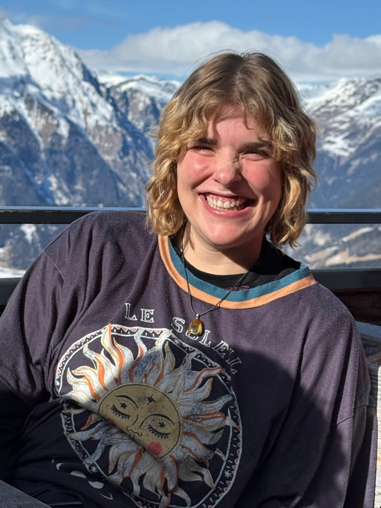

Birgit
Praktijkgerichte orthopedagoog
Energiek, positief en altijd in voor een goed gesprek — met collega's én met de jongeren zelf. Ik leg graag verbindingen, denk buiten de lijntjes en omarm nieuwe ideeën. Samen kijken we eerlijk naar wat moeilijk loopt, en zoeken we naar wat wél werkt. Met twee voeten in de praktijk, een open blik en energie voor tien.